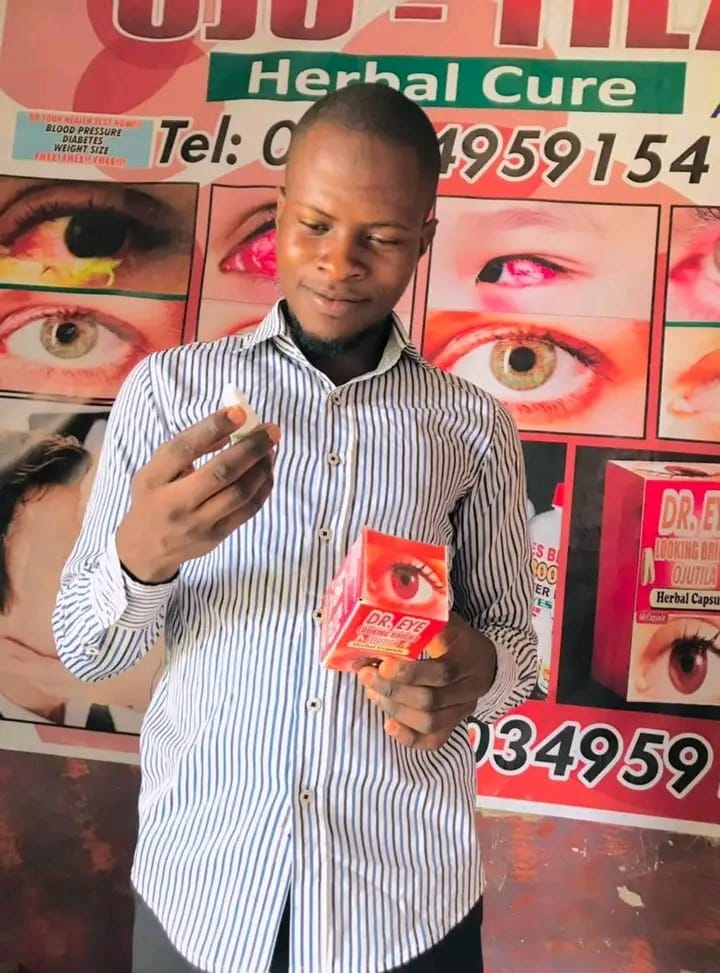

Dr Majila grew up in a rural area, surrounded by nature. From a young age, he had a deep appreciation for the natural world and the power of herbs and plants to heal and nourish the body. He studied botany and herbalism in college, and after graduation, he began experimenting with herbal formulations in his kitchen. After years of research and development, he founded Majila Herbal Ventures to bring her vision to life.
Dr Majila's goal with Majila Herbal Ventures is not only to create effective, natural products, but also to educate people about the benefits of using herbs and plants for health and wellness. He hopes to inspire others to live a more natural, holistic lifestyle, and to make more informed choices about the products they use. In addition to selling her products, Dr Majila also offers educational workshops and webinars on topics like herbalism, plant medicine, and sustainability.
Eye Looking Bright Herbal Capsule OJUTILA is a natural supplement designed to support eye health. It contains ingredients like lutein, zeaxanthin, and bilberry etc,which are known for their antioxidant and anti-inflammatory properties. These ingredients can help protect the delicate eye area from environmental stressors and promote overall eye health. The supplement can be taken daily with water, making it a convenient and easy way to support eye health.
All of the ingredients in Eye Looking Bright Herbal Capsule OJUTILA are ethically sourced and organically grown. The supplement is manufactured in a GMP-certified facility, using the highest quality standards. The capsules are vegan and gluten-free, making them suitable for people with dietary restrictions. The company also donates a portion of its profits to organizations that support eye health.
Majila Herbal Ventures is a mission-driven company with a passion for natural health and wellness. The company's mission is to empower people to take control of their health through education and access to high-quality, all-natural products. They believe that health is more than just the absence of disease, and that true health includes mental, physical, and spiritual well-being.
Customers have shared many positive reviews about their experiences with Eye Looking Bright Herbal Capsule OJUTILA. One customer, John Uche, said, 'After using Eye Looking Bright Herbal Capsule OJUTILA for just two weeks, I noticed a significant improvement in my eye health. My eyes felt more hydrated and less tired. I also noticed a reduction in the appearance of fine lines and dark circles.' This is just one example of how the product has helped customers improve their eye health.
Majila Herbal Ventures offers a wide range of natural supplements, including products for eye health, sleep, stress, immune support, and more. We also have a line of products for specific health conditions, such as rheumatism, diabetes, menstrual cramps, body pains, and piles. No matter what your health concern is, Majila Herbal Ventures has a product that can help.